OPERATION OF THE CLIMATE CONTROL SYSTEM
- Path
- Descriptions > 50 auxiliary units > OPERATION OF THE CLIMATE CONTROL SYSTEM
- Kind
- system description
- Applies to
- all engines; all production periods
- Interactive page
- https://sloeber94.github.io/elrnDB-lThss/en/#/162343
Applies to: all engines; all production periods
FUNCTIONS
The automatic climate control system manages the temperature (2 zones), the distribution (2 zones) of the air and the air flow rate inside the passenger compartment on both the driver and passenger sides (front or front and rear) to achieve the desired comfort level.
The system is operated by the persons in the front of the vehicle using the control panel on the centre console.
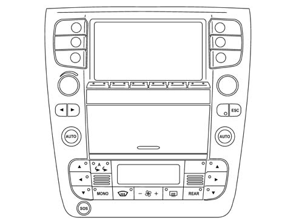
The passengers in the rear can adjust the system using the controls on the rear control panel.
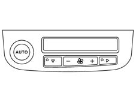
The following parameters/functions are regulated automatically:
- Driver's/passenger air vents temperature (front/rear);
- Driver's/passenger air vents distribution (front/rear);
- Fan speed (continuous variation).
- Engagement of compressor.
- Recirculation.
All the functions listed can be altered manually, in other words the user can select one or more of the functions of their choice using the control panel in the centre console illustrated in the diagram.
Manual selections always take priority over automatic ones and are memorized until the user switches back to automatic operation.
The manual setting of a function does not adversely affect the automatic control of the other functions.
The following parameters/functions can be set or altered manually:
- Driver / Passenger temperatures.
- Fan speed.
- Distribution in 7 positions (Driver / Passengers).
- Diffused air distribution.
- Compressor enablement.
- Single zone / Dual zone distribution priority (Front / Rear).
- MAX DEF defrosting / demisting function.
- Recirculation.
- Automatic/manual system management.
- Heated rear windscreen.
- Switching off the system.
- Enabling the rear control panel.
The MAX-DEF function groups together a collection of actions that make it possible to demist both the windscreen and the rearscreen quickly.
Each time the system is switched off, after having memorized the status of the controls/implementations, the recirculation is forced open and the VENT and MIX distribution is completely cold, thereby preparing the conditions for the operation of the "Solar cell roof" option.
Each time it is switched on the system restores the conditions memorized when it was switched off, with the exception of the MAX-DEF function which is zeroed.
INTRODUCTION TO THE DISPLAY OF THE FUNCTION STATUS
The display of the climate control system function status is shown through the LED and the DISPLAY. The table below illustrates the function buttons and LEDs in the front control panel.
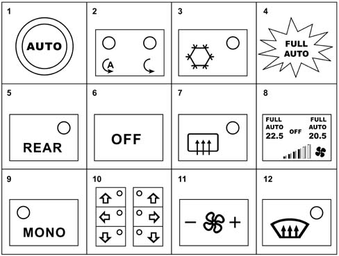
1. TEMPERATURE setting KNOB
By turning the knob to the desired area (driver/passenger) the temperature in the passenger compartment is either increased (clockwise direction of rotation) or decreased (anti-clockwise direction of rotation).
1. AUTO mode BUTTON
By pressing this button, one for each zone, the following functions are managed automatically by the system:
- Distribution of the air (on the side involved).
- Fan speed.
- Compressor operation.
2. RECIRCULATION function LED.
There are two green and amber LEDs.
RECIRCULATION | |||
|---|---|---|---|
FUNCTION | GREEN LED | AMBER LED | RECIRCULATION STATE |
AUTOMATIC | ON | OFF | OUTSIDE AIR RECIRCULATION |
AUTOMATIC | ON | OFF | OUTSIDE AIR RECIRCULATION |
FORCED CLOSED | OFF | ON | RECIRCULATION |
FORCED OPEN | OFF | OFF | OUTSIDE AIR |
3. Compressor Enablement Function LED
It is green and, if on, it signals that the compressor is enabled
4. FULL AUTO
Icon in the display, driver's side and passenger side.
If on, it signals that all the functions, excluding recirculation, are managed, zone by zone, by the control system.
The FULL icone switches off if there is at least one flow rate or distribution manual control.
The FULL AUTO icon (or AUTO if the FULL was already off) switches off if the system is not capable for manual intervention reasons, to gurantees that the temperature set for that zone can be automatically reached/maintained.
5. REAR function LED.
It is green and, if on, signals that the system has enabled the rear controls.
6. OFF function LED.
The following actions take place in OFF:
- Memorizing of the current state.
- Closed air recirculation and relevant LED lit up.
- Switching off of the display (with the exception of the OFF icon) and the LEDs, with the exception of the Heated Rear Windscreen, if activated.
- Compressor excluded.
- Fan excluded.
- Mixer in max cold position.
- Def/Vent distribution.
- In the OFF state the Heated Rear Windscren button is managed normally without activating the Clima system.
MAX-DEF function LED.
It is amber and, if on, signals that the MAX-DEF function is on.
7. HEATED REAR WINDSCREEN function LED
It is amber and, if on, signals that the Heated Rear Widnscreen function is on.
8. DISPLAY
It is the positive transflexional type, displaying the air flow rate in the passenger compartment on a bar graph, the temperatures set, the OFF state, the state at the diffused air vents and the automatic level of control.
9. MONO function LED.
It is green and, if one, signals that the system is operating in single-zone temperature and distribution mode.
10. Air distribution LED
It is green and signals the air diffusion mode in the passenger compartment.
11. FAN SPEED BUTTON
It allows the fan speed and therefore the desired air flow rate in the passenger compartment to be selected.
12. MAX - DEF BUTTON
The button for switching on the Max - Def function involves positioning the distribution in Defroster, at 8 of the 12 bars for the fan speed, engaging the comperssor, forced recirculation open, heated rear windscreen on.
The table below illustrates the function buttons and LEDs in the rear control panel.
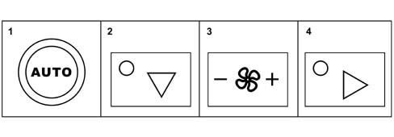
1. TEMPERATURE setting KNOB
By turning the knob to the desired area (driver/passenger) the temperature in the passenger compartment is either increased (clockwise direction of rotation) or decreased (anti-clockwise direction of rotation).
1. AUTO mode BUTTON
By pressing this button, one for each zone, the following functions are managed automatically by the system:
- Distribution of the air (on the side involved).
- Fan speed.
- Compressor operation.
2. / 4. Air distribution LED
It is green and signals the air diffusion mode in the passenger compartment.
3. FAN SPEED BUTTON
It allows the fan speed and therefore the desired air flow rate in the passenger compartment to be selected.
CONTROL FUNCTIONS AND STRATEGIES
Intial switching on
Each time the battery is connected, the display automatically shows the passenger compartment temperatures set at 24 ºC.
The control unit configuration is as follows:
- AUTO = Automatic with FULL Auto lit up.
- Compressor enabled (compressor LED lit up).
- MAX-DEF = OFF with function LED off.
- HEATED REAR WINDSCREEN = OFF with function LED off.
- RECIRCULATION = CONTROLLED BY AUTOMATIC FUNCTION
- THE VENTILATION and THE DISTRIBUTION of the air are set by the logic.
Switching on after the vehicle has been stopped (switching on for the second time)
On switching on the various parameters are controlled manually or automatically depending on the selections made by the user before switching off.
Therefore all the manual interventions made before switching off the vehicle are memorized and maintained the next time the vehicle is started up.
This is also valid for the OFF function; if it was OFF before switching off, the system will be OFF again when the vehicle is started up.
If at the previous key-off, the control was at Max Def, at the next key-on the system will assume the condition memorized before the Max Def.
Dual controls and general information on the controls.
All the buttons not involved with adjustment are dual control, including the Recirculation which has rolling management.
The function is enabled after the button is pressed.
Pressing any of the other buttons is only recognized after the previous button has been released.
There is no REPEAT function.
Winter starting transition
The climate control system automatically implements the cold starting procedure if the following conditions exist:
- engine coolant temperature °TH < SUB > 2 < /SUB > O below - 4°C
- driver's side temperature below temperature set
- outside temperature ° T < SUB > EXT < /SUB > . below 20 °C
At the key-on, with the system on AUTO or FULL AUTO, if the above mentioned conditions exist, the system behaves as follows (forcing the MONO condition):
- for a time of 5 secs. the minimum flow rate with FLOOR distribution (not displayed).
When this period has elapsed:
- a second air flow rate of the values shown in the "Adjustment of the air flow depending on the temperature of the engine coolant °TH < SUB > 2 < /SUB > O. “ table.
- DEF distribution (displayed).
- The mixture is in the automatic mode position.
- Automatic Recirculation (AQS).
- The Compressor remains how it was previously. If it was enabled (LED on), it is subject to the logic in the "Compressor enablement/disablement" paragraph. It is therefore possible, during starting, to engage the compressor to dehumidify the air.
Exit from the provisional cold starting mode takes place when the temperature of the engine coolant has exceded the value °TH2O -4°C. or when the passenger compartment T ³ T set (driver's side).
When coming out of the warm up stage the system should manage the DEF Floor distribution (or, possibly be-lev, if required) gradually, keeping the air flow rate on exiting the warm up stage, then increasing it to the value calculated (if the system is on Full Auto) when the distribution is at FLOOR.
If the system was in "Manual flow rate" at the key-on, then when the warm up stage is over, it should restore the fan speed memorized previously if it was greater than the flow rate on coming out of the warm up stage, otherwise it should maintain the flow rate selected manually.
If a different configuration was selected manually, it is implemented and signalled, taking priority over the present procedure.
Adjustment of air flow rate according to °TH2O"
Until the temperature of the engine coolant TH2O is lower than the level of -4°C, the climate control system manages the adjustment of the air flow rate procedure according to TH2O, controlling the air flow rate with reference to a curve which is related to the temperature value TH2O and the flow rate value.
When the adaptation stage is over, the system then controls the air flow rate calculated.
The following table contains the air flow rate and temperature H2O figures for the provisional cold starting for systems without PTC.
Intermittent points | Q DEF ( % of seasonal max.) | Engine coolant temperature (° C ) |
|---|---|---|
The following table contains the air flow rate and temperature H2O figures for the provisional cold starting for systems with PTC.
Intermittent points | Q DEF ( % of seasonal max.) | Engine coolant temperature (° C ) |
|---|---|---|
On leaving this curve, the flow rate figure calculated by the automatic function should be reached with a ramp of 3 secs.
Temperature setting
The temperature in the passenger compartment can be differentiated in 2 zones: driver's zone and front/rear passengers zone.
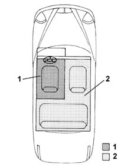
- 1. Driver's zone
- 2. Passengers zone
To set the desired temperature, turn the temperature setting knob to the zone involved. Turning in a clockwise direction increases the temperature and viceversa.
The increases/decreases are in steps of 0.5 ºC and one complete revolution of the knob produces 16 steps.
The alteration to the temperature is constantly shown on the following displays: front, for the driver's and passenger zone, front (passenger side)/rear, for the passengers zone.
The system does not allow a difference in temperature between the two zones of more than 7°C.
By turning a knob until the difference mentioned above is reached, the system stops the knob (none of the knobs has priority over the others), maintaining this difference between the two zones.
The temperature range that can be set is between 16 and 32 ºC; below 16 ºC the value set becomes «LO», whilst above 32 ºC the value set becomes «HI», therefore further reductions in temperature in the "LO" condition or increases in the "HI" condition have no effect on the temperature set.
When the control unit is switched off, the temperature value set, shown on the display, is memorized and restored at the next key-on.
If, as a result of one or more manual interventions by the user (disabling the compressor, selecting an air flow rate that it too low), the system is not capable of reaching/maintaining the temperature value requested and the temperature set flashes to signal the difficulties encountered by the system and the word AUTO switches off automatically.
"HI" condition
The "HI" condition is reached by setting a temperature above 32 ºC.
This request by the user forces the system into FULL AUTO and MONO, does not cause the possible starting transition to be aborted and involves the following actions:
- Mixer in fully hot position.
- FLOOR distribution
- Air flow rate at maximum value (seasonal)
- Compressor according to logic
- Recirculation remains as requested by user.
Manual settings are allowed in the "HI" condition.
Exiting the MONO condition determines exiting the HI function and the temperature setting of 32° C for both zones.
If the driver turns the temperature setting this moves the passenger setting out of "HI".
If the passenger turns the temperature setting this also moves the driver's setting out of HI (at 32 ºC), then changing their own settings placing the system in the Dual Zone mode.
"LO" condition
The "LO" condition is reached by setting a temperature below 16 ºC.
This request by the user forces the system into FULL AUTO and MONO, causes the possible starting transition (if activated) to be aborted and involves the following actions:
- Mixer in max cold position.
- FLOOR distribution
- Air flow rate at maximum value (seasonal)
- Compressor enablement.
- Recirculation remains as requested by user. If the request is Automatic, the flap is forced closed when the passenger compartment temperature becomes < T ext. The normal Automatic logic returns on exiting from LO.
Manual settings are allowed in the "LO" condition.
Exiting the MONO condition determines exiting the "LO" function and the temperature setting of 16° C for both zones.
If the driver turns the temperature setting this moves the passenger setting out of "LO", to 16° C
If the passenger turns the temperature setting this also moves the driver's setting out of LO (to 16 ºC), then changing their own settings placing the system in the Dual Zone mode.
The requested temperature flashing logic in the display is valid, if the Compressor is disabled after the "LO" request and the recirculation is positioned in Automatic mode (if it was forced closed).
Air flow rate variant
The air flow rate can be adjusted manually to 12 settings plus the OFF position, shown by 6 bars on the display.
If there have been no manual interventions, the fan speed is controlled continuously by the system and this is shown on the display by the relevant number of half-bars lighting up according to the flow rate.
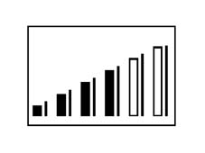
Three "seasons" with which the automatic function associates a particular maximum flow rate value have been identified:
- Text. £ 15° C max flow rate 60%
- 15° C < Text. £ 25° C max flow rate 70%
- Text. > 25° C max flow rate 70%
If the ventilation control is operated manually, the FULL AUTO condition is exited.
To increase or decrease the fan speed, the centre rocker control is used, pressing "+" or "-" to increase or decrease the air flow rate, respectively.
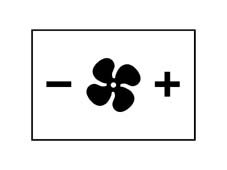
At the key-on, with the system in FULL AUTO mode, the ventilation is at 1 half-bar (minimum) until the engine is started up. The ventilation is only not at 1 half-bar if there are problems with the battery.
If the compressor is disabled, operating the ventilation controls manually results in 0 bars being shown on the display and consequently 0% of the maximum flow rate (fan switched off).
If the compressor is enabled and the engine started up, acting manually on the ventilation controls decreases the flow rate down to a minimum of 1 bar (20% of the maximum flow rate).
A minimum air flow rate is required to prevent the evaporator from freezing.
Air distribution
Automatic control
The air is distributed in the passenger compartment according to 7 modes: VENT, BI_LEVEL, FLOOR, FLOOR_DEF, DEF, FLOOR_DEF_VENT :
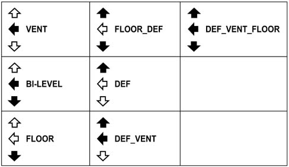
In automatic mode the system controls the exact direction of the distribution, excluding DEF_VENT and completely OFF, and displays the selection by lighting up the relevant LEDs in the control buttons.
Three outside temperature bands (T ext.) have been identified with which the automatic function associates a particular distribution mode:
- Text. £ 15° C FLOOR distribution
- 15° C < Text. £ 25° C BI-LEVEL distribution
- Text. £ 25° C VENT distribution
The automatic control, when the sun's rays are fairly strong, forces the distribution (FLOOR to BI-LEVEL and BI-LEVEL to VENT) to search for the best comfort conditions.
The values for the rays where there is a shift from one type of distribution to another are:
- 500 W/m < SUB > 2 < /SUB > FLOOR to BI-LEVEL
- 700 W/m < SUB > 2 < /SUB > BI-LEVEL to VENT
with a hysteresis of +/- 100 W/m².
Manual control
One of 7 positions can be selected manually by operating the appropriate buttons.
Main distributions:
- DEF
- VENT
- FLOOR
Combined distributions:
- BI_LEVEL
- FLOOR_DEF
- FLOOR_DEF_VENT
- DEF_VENT
Prohibited distributions:
- All OFF
With the main distribution actived (one LED on), the following takes place when the same button is pressed:
- the distribution remains unchanged.
- the system moves to Manual (the FULL logo goes out if it is on).
The driver's DEF distribution is "dominant" compared with the passenger side and, therefore, each time the driver selects a distribution in DEF mode this also forces the distribution of the passenger side in DEF mode.
The passenger can change this setting by operating any of the distribution buttons.
Diffused vents setting
The "diffused vents" allow the introduction of air into the passenger compartment in a "diffused" manner.
This function is entirely new for climate control systems and consists in supplying the air at low speeds (about 50% less compared with normal operation) through additional vents.
Doing this considerably decreases the impact speed of the air on the occupants and the noise due to the air coming out of the vents.
The result of this combination is the almost complete absence of being able to notice the introduction of air into the passenger compartment with the resulting improvement in comfort for the occupants of the vehicle.
The opening of the diffused vents takes place through the cursor operating an extra-stroke (one for each zone) through the manual opening/closing control of the diffused vents.
In effect, for each extra-stroke for these cursors, there is a switch that, if activated, sends a control signal to the climate control system control unit.
When the diffused air vent is open, there is a visual display by the cursor end of travel.
There are 4 possible distribution cases for the dashboard:
- Vent
- Bi-Level ( Vent-Floor)
- Vent-Def
- Tri-Level ( Vent-Floor-Def)
There are 3 possible states for the open diffused air vents for each of these:
- Driver's side
- Passenger side
- Driver + Passenger side
Recirculation
The recirculation button operates according to a ROLLING logic, in other words, pressing the button repeatedly recalls the three possible types of operation:
- Automatic
- Recirculation forced closed
- Recirculation forced open
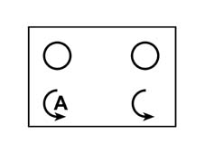
Automatic
The green LED on the left of the button lights up.
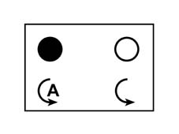
The recirculation is managed automatically (opening/closing) dependent on both the quality of the air entering and the thermal-regulation transitions.
The "Intake air quality" sensor controls the closure of the recirculation flap when the concentration of harmful gases exceeds the warning level.
In particular, it is capable of distinguishing the following levels:
- Clean air
- 1st pollution level
- Sensor faulty
In automatically controlled closed recirculation conditions, there must be provision for a temporary reopening of a fixed period, after a suitable length of time, to allow the changing of the air inside the passenger compartment for a fixed duration.
This reopening, lasting 1 minute, will be implemented between the 10th and the 15 minute, as soon as the AQS sensor enables the reopening of the recirculation. If this does not take place, the system will force the reopening at the 15th minute.
Recirculation forced closed
The amber LED on the right of the button comes on and the green one goes out.
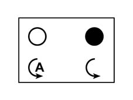
The recirculation flap is closed during this type of operation.
The timed reopening logic, described in the previous paragraph, is valid.
Recirculation forced open
Both the LEDs in the botton are off.
The outside air flap is open in this operating mode.
Compressor enabling/disabling
The button for the compressor is the dual type, in other words it allows the sequential switching on and off.
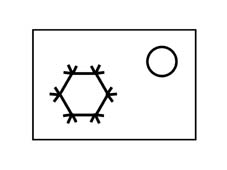
With the LED on, pressing the button disables the compressor and selects automatic recirculation if it was previously closed.
Once the button has been pressed, this selection remains memorized indefinitely even after the vehicle has been switched off, the same as for the other manual controls.
If the recirculation forced closed is selected, the compressor LED comes on and the compressor is operated. This function is called: resetting, for one time, of the compressor with forced closed recirculation.
If the user reconfirms the desire to deactivate the compressor by pressing the relevant button again, always with the recirculation closed, this time the compressor is disabled and the recirculation remains closed.
The enabling of the compressor through a further operation of the button or by pressing the AUTO button "re-initializes" the resetting function described above.
The switching off of the compressor Enabling LED does not automatically involve the switching off of the FULL logo if it is on.
With the compressor disabled, the control checks whether the system is capable of reaching/maintaining the passenger compartment T set, with the outside temperature and the other parameters:
- If the answer is YES, then the system works normally and is capable of meeting the requirements even without the compressor switched on.
- If the answer is NO, then the system is not capable of meeting the user's requirements and signals this by making the temperature setting figures flash.
If, at the end of the flashing, the compressor has not been activated, the words FULL and AUTO will go out until the compressor enablement control is restored.
The enablement of the compressor is always managed by the control logic as follows:
- If the system is not in recirculation:
- Outside temperature < 0°C: the compressor is disabled
- Outside temperature > 2°C: the compressor is enabled
- If the system is in recirculation:
- Passenger compartment temperature < 0°C: the compressor is disabled
- Passenger compartment temperature > 2°C: the compressor is enabled
AUTO function
Pressing this button, one for each zone, restores the control of the following functions to the automatic mode:
- distribution of the air (on the side involved).
- Fan speed.
- Compressor
When the FULL and AUTO logos and the compressor LED are on, this means that all the functions indicated above are automatically controlled by the system.
The FULL logo goes out if a distribution or flow rate control is operated manually.
If the compressor has been manually disabled, the system may no longer be capable of controlling/maintaining one or both of the temperatures set.
To warn the user/s who has/have requested this/these temperature/s, the temperature/s set flash to indicate the above mentioned critical situation.
If, at the end of the flashing, the compressor has not been enabled, then the FULL logo (or the AUTO logo only if the FULL logo was already off) will go out (see enclosed table).
Therefore the button which disables the compressor does not necessarily switch off the FULL logo.
Table for switching off FULL and/or AUTO logos in different compressor Enablement, Distribution and Flow rate conditions:
Compressor enablement | Button LED | Flow rate | Flow rate | Timing | Timing | Logo | Logo |
|---|---|---|---|---|---|---|---|
Auto | Manual | Auto | Manual | FULL | AUTO | ||
ON | ON | X | X | ON | ON | ||
OFF | OFF | X | X | ON if TR ³TE OFF if TR < TE | ON | ||
ON | ON | X | X | OFF | ON | ||
ON | ON | X | X | OFF | ON | ||
ON | ON | X | X | OFF | ON | ||
OFF | OFF | X | X | OFF | ON if TR ³TE OFF if TR < TE | ||
OFF | OFF | X | X | OFF | ON if TR ³TE OFF if TR < TE | ||
OFF | OFF | X | X | OFF | ON if TR ³TE OFF if TR < TE |
TR: Temperature Requested
TE: Outside Temperature
MAX-DEF function
The Max-Def function is managed by a procedure activated through the relevant button only with the engine started up.
(With the engine switched off the function is pre-selected, lighting up the LED and positioning the distribution, mixture and recirculationf flaps).
The following operations are activated by this procedure:
- Max Def LED lit up
- memorizing of the function state and previous displays of Max Def control
- switching off of the LEDs/logos relating to the FULL AUTO functions
- switching on of the DEF, MONO distribution, compressor enablement and HEATED REAR WINDSCREEN LEDs
- display of the max hot temperature (HI) on both the side figures
- display of the ventilation in the centre display
- activation of the following controls on the climate control:
- air flow rate 65% of the max flow rate (to be defined during the routine P.D.I.)
- distribution flap in Def position (before implementing the Mix and flow rate)
- mix flaps in Max Hot position
- forced air intake flap open (dynamic)
- compressor function enabled
- AQS function disabled
- rear windscreen defrost function
During the operation of the Max-Def it is possible to:
- alter the air flow rate (up/down) at will.
- Deactivate the heated rear windscreen.
It is not possible to:
- alter the temperature setting (driver/passenger).
- Alter the distribution setting.
It is possible to interrupt the Max-Def function by activating any one of the climate control buttons (recirculation, compressor enablement, auto, Mono, Max-Def) implementing the return to the prior to the Max Def plus the implementation of the control for the button pressed.
The management of the Max-Def procedure takes priority over the management of the following procedures:
- LO (max cold)
- HI (max hot)
if their execution is in progress, it is interrupted if the Max-Def procedure is activated.
The Max Def procedure lasts 3 minutes.
The counting of the time for the Max Def procedure starts the moment the temperature of the engine coolant exceeds the winter transition exit level ( T H2O-3 ).
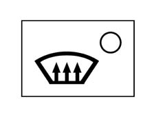
Heated rear windscreen function
The rear defrosting is implemented both with the appropriate button pressed and through the Max Def procedure.
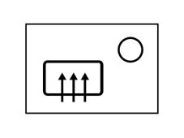
The display of the function state takes place through the relevant LED switching on/off. The function requesting the activation of the heated rear windscreen is only subject to the presence of the key-on.
The HEATED REAR WINDSCREEN function is not memorized at the key-off.
When the system is off, the function is managed autonomously.
REAR function
Pressing the REAR button (LED comes on) determines the following actions:
- transfer of controls/displays to the rear control panel
- impossibility for the front passenger to alter the climate control settings
- reproduction on the right section of the front display of the settings made on the rear panel.
This function in activated in both MONO and dual zone mode.
Pressing the Rear button again (LED on) reactivates the enablement of the front pasenger controls (LED off).
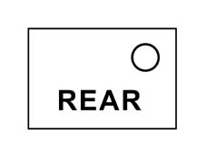
MONO function
Pressing the MONO button has the following consequences:
- the temperature set by the passenger made is made the same as that set by the driver.
- the distribution set on the passenger side is made the same as that set by the driver.
- the MONO button LED comes on
From this moment the system behaves in the mono-zone mode and each operation carried out by the driver is transferred to the passenger side.
Pressing the MONO button again or changing the temperature and/or distribution on the passenger side, returns the system to the DUAL ZONE mode (the LED goes out).
Switching off the control unit/system
Switching off the control unit/system is carried out by keeping the air flow rate rocker control pressed in the "decrease" position for 2 seconds (OFF condition).
The OFF icon appears on the display.
In OFF the system:
- memorizes the current state
- Closed forced air recirculation and relevant LED lit up. The recirculation button is dual control (ON/OFF) opening (LEDs off) and closing (amber LED on) the flap, without managing the automatic operation of the AQS.
- The OFF icon in the display comes on and all the other icons and LEDs go off, with the exception of the Heated Rear Windscreen if it is working. The heated rear windscreen function is managed independently of the switching off of the climate control system/control unit.
- Compressor excluded.
- Fan excluded.
- Mixer in max cold position.
- Def/Vent distribution.
In OFF pressing any button (except for the Heated Rear Windscreen and Recirculation) switches the system back on, enables the function requested, if previously disabled, or maintains it. It restores all the operating conditions that the system had memorized previously, forcing the automatic control of the flow rate if switched on using an AUTO button.
With the air flow rate adjustment rocker switch as well, increasing the value beyond the first bar restores all the conditions prior to the switching off, at the same time enabling the manual flow rate request.
When exiting the OFF condition, the system sets the Recirculation to Automatic.
PTC management
With the aim of speeding up the warm up, the enabling of the PTC is managed through 2 OUTPUT signals.
The control unit checks that the following conditions exist simultaneously and continue for 3 secs.:
- OUTSIDE TEMPERATURE = WINTER ( < 20 °C )
- key - ON
- CLIMA ¹ CONTROL UNIT OFF (if it is the automatic clima system)
- REVOLUTION COUNTER (RPM) > 700 rpm (variabile in E < SUB > 2 < /SUB > prom)
- °T H < SUB > 2 < /SUB > O < 64 °C
- Air flow rate > 0
- Battery voltage > 12.2 V
- Treated Vent Temperature £ 50 °C
- Waiting for a period of 3 secs.
With the procedure in progress, it will be aborted (until the next key OFF/ON) in each of the following conditions:
- RPM < 700 RPM
- °T H < SUB > 2 < /SUB > O > 64 °C
Whilst it will only be suspended (and resumed, at the point it was suspended, when the condition that caused the suspension no longer exists):
- if the user manually selects a nil flow rate, using the flow rate decrease button
- Clima ECU in OFF (manually selected using the control unit controls)
- treated Vent temperature > 50 °C
With the procedure in progress the outside temperature is no longer monitored.
The system manages the activation/deactivation of the relays depending on the temperature reading of the H2O, according to the following table:
T H2O | % PTC |
³ 64 ºC * | 0 |
³ 62 ºC and < 64 ºC | 33 |
³ 60 ºC and < 62 ºC | 66 |
< 60 ºC * | 100 |
When the warm up is completed in accordance with the thermal balance table (T H2O ³ 64 ºC Þ PTC = 0%), if the temperature of the H2O decreases again below 64ºC, the PTC control logic is not reactivated until the next key cycle - ON Þ OFF Þ ON.
The PTC control also takes into account the supply voltage (measured at the control unit terminals) to establish the enablement percentage in accordance with the electrical balance of the vehicle.
This control uses the data contained in the two tables relating to the first 120 secs. the PTC is activated and the remaining part of the control, respectively:
Table relating to the first 120 secs. of the check
VBATT [V] | % PTC |
£ 12.2 | 0 |
£ 12.4 and > 12.2 | 33 |
£ 12.6 and > 12.4 | 66 |
> 12.6 | 100 |
Table for the remaining part of the check
VBATT [V] | % PTC |
£ 12.5 | 0 |
£ 12.7 and > 12.5 | 33 |
£ 12.9 and > 12.7 | 66 |
> 12.9 | 100 |
The battery voltage, read at the control unit terminals, that determines the PTC percentage shifts, should take the actual VBatt "derivation" into consideration; therefore the average of the readings (10 values in 10 seconds) should be taken and the median of these averages should be calcuated every 60 seconds.